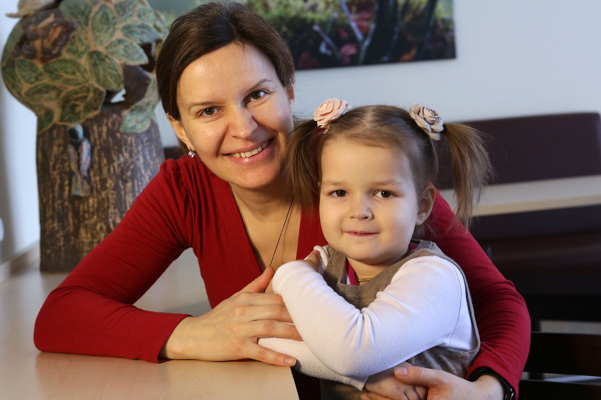

Berlin-Buch · Ukraine · Mira
Manche Patienten vergisst man nie. Nicht, weil ihre Erkrankung besonders selten war. Nicht, weil die Behandlung spektakulär verlief. Sondern weil ihr Schicksal einen über Jahre begleitet.
Mira gehörte dazu.
Als sie mit ihrer Mutter in Berlin ankam, war sie gerade eineinhalb Jahre alt. Von dem fröhlichen kleinen Mädchen, das ihre Eltern beschrieben, war kaum noch etwas zu erkennen. Sie konnte nicht mehr selbstständig sitzen. Sie konnte kaum Kontakt aufnehmen. Die MRT-Bilder zeigten einen großen Hirntumor. Noch bedrückender war jedoch der Befund entlang des Rückenmarks: Der Tumor hatte bereits Metastasen gebildet.
Die Eltern hatten einen langen Weg hinter sich. In der Ukraine und in Russland hatten sie zahlreiche Ärzte aufgesucht. Niemand wollte eine Biopsie durchführen. Ohne Gewebeprobe ließ sich keine sichere Diagnose stellen. Ohne Diagnose konnte auch keine gezielte Behandlung beginnen. Statt einer Therapie erhielten die Eltern eine Prognose: Ihre Tochter werde wahrscheinlich nur noch wenige Wochen leben.
Sie wollten das nicht akzeptieren.
Später schrieb Miras Mutter in einem Brief an mich: „Jeder Morgen fing bei uns mit den Fragen an: Was können wir noch tun? An wen können wir uns noch wenden?“
Dann kam Berlin.
Auch bei uns war die Situation dramatisch. Der Neurochirurg, den ich um die Biopsie bat, war äußerst zurückhaltend. Aus seiner Sicht sprach kaum etwas für einen Eingriff. Mira war in einem sehr schlechten Allgemeinzustand.
„Lass sie sterben.“
Diesen Satz habe ich nie vergessen.
Ich konnte ihn nicht akzeptieren. Nicht weil ich sicher war, dass wir Mira retten würden. Das wusste niemand. Aber ich wusste, dass sie ohne eine Biopsie überhaupt keine Chance hatte. Ohne Diagnose konnte niemand die richtige Therapie beginnen.
Schließlich wurde die Gewebeprobe entnommen. Der Befund lautete: Medulloblastom WHO Grad IV. Bereits am nächsten Tag begann die Chemotherapie.
Für Mira begann damit der schwerste Abschnitt ihres jungen Lebens. Für ihre Mutter ebenfalls.
Zu diesem Zeitpunkt war unser Mädchen erst eineinhalb Jahre alt und konnte nicht mehr selbstständig sitzen. Sie lag nur da und schaute mich mit ihren nicht kindlichen Augen an. Mir schien, darin immer wieder dieselben Worte zu lesen: „Mama, bitte hilf mir.“ Aus dem Brief von Miras Mutter
Der erste Chemotherapieblock war hart. Mira musste sich mehrmals täglich übergeben. Ihre Mutter saß Tag und Nacht an ihrem Bett. Niemand wusste, ob die Behandlung überhaupt anschlagen würde.
Und dann geschah etwas. Nicht plötzlich. Nicht spektakulär. Zuerst konnte Mira sich wieder allein auf die Seite drehen. Ein paar Tage später zeigte sie wieder Interesse an ihrer Umgebung. Ihre Mutter spielte ihr mit kleinen Figuren ein Puppentheater vor.
Als ich ihr Puppentheater vorführte, lächelte sie wieder seit langem. Das waren Momente des wahren Glücks. Aus dem Brief von Miras Mutter
Als ich diesen Satz zum ersten Mal las, verstand ich wieder einmal, warum Eltern anders auf eine erfolgreiche Behandlung schauen als Ärzte. Wir sprechen von Ansprechraten, MRT-Befunden und Überlebenswahrscheinlichkeiten. Eltern sprechen davon, dass ihr Kind wieder lächelt.
Während der weiteren Behandlung gab es immer wieder Rückschläge. Einmal entwickelte Mira eine schwere allergische Reaktion auf eines der Chemotherapeutika. Innerhalb weniger Minuten verschlechterte sich ihr Zustand dramatisch. Das Stationsteam reagierte sofort. Ihre Mutter musste draußen auf dem Flur warten.
Später beschrieb sie diese Minuten als die längsten ihres Lebens. Als sie wieder zu ihrer Tochter durfte, war Miras Gesicht rosig geworden. Sie begann zu weinen – fast so, als wolle sie ihrer Mutter erzählen, dass sie sie eben schmerzlich vermisst hatte.
Die nächsten Monate waren geprägt von Chemotherapie, Bestrahlung, Physiotherapie und unzähligen kleinen Fortschritten. Cornelia kümmerte sich morgens um Mira, wenn ihre Mutter sie nüchtern zur Bestrahlung bringen musste. Walli arbeitete mit ihr in der Physiotherapie. Dr. Selle führte die entscheidenden Gespräche mit der Mutter. Auch Dr. Wickmann, mit dem ich später nicht immer einer Meinung war, kümmerte sich aufmerksam um Mira und ihre Familie. Die Mutter erwähnte ihn in ihrem Brief ausdrücklich. Das gehört zu dieser Geschichte genauso dazu.

Anderthalb Jahre später schrieb mir Miras Mutter erneut. Mira sprach wieder. Sie spielte mit anderen Kindern. Sie lachte.
Am Ende ihres Briefes standen Worte, die ich selbst niemals über mich geschrieben hätte. Deshalb soll sie auch nicht der Autor dieses Textes sagen, sondern Miras Mutter.
Für uns als Eltern ist es die größte Freude, unser Mädchen lächelnd und zufrieden zu sehen. Sie haben uns unsere kostbare Mira geschenkt. Aus dem Brief von Miras Mutter